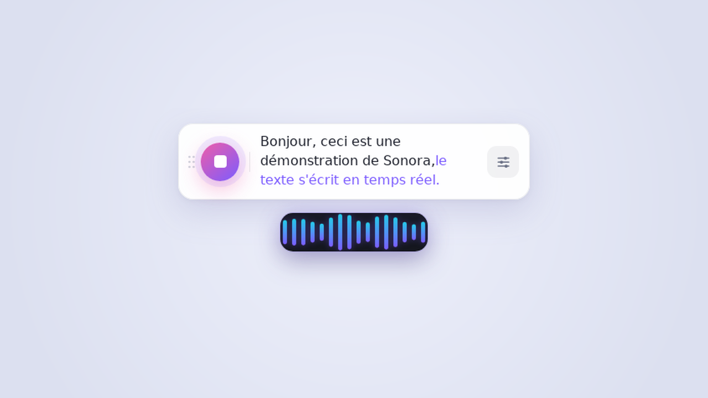
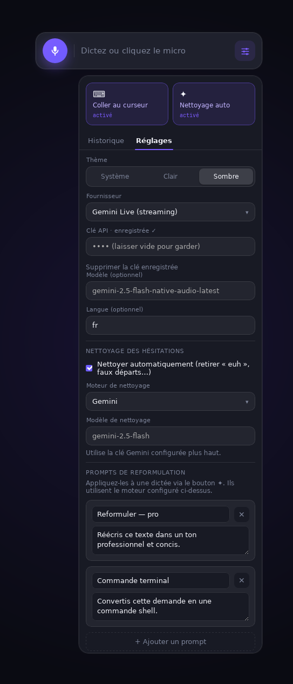
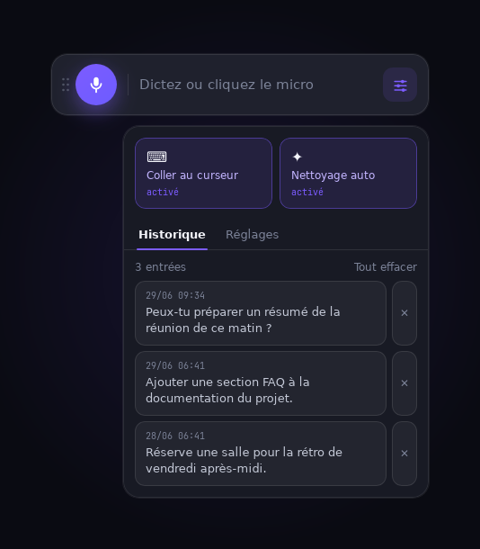

Documentation
Tout pour installer, configurer et maîtriser Sonora — en quelques minutes.
Présentation
Sonora est une barre flottante de dictée vocale pour macOS, Windows et Linux. Vous appuyez sur un raccourci, vous parlez, et le texte transcrit est tapé directement à l'endroit de votre curseur (ou copié au presse-papier).
Sonora ne transcrit pas lui-même : il s'appuie sur le moteur de votre choix. Selon vos priorités (vitesse, qualité, confidentialité, coût), branchez Gemini, Mistral, OpenAI, Groq, n'importe quel service compatible OpenAI, ou un modèle Whisper 100 % local qui fonctionne sans connexion.

Installation
Récupérez la dernière version sur la page GitHub Releases, puis suivez la procédure pour votre système.
🍎 macOS (Apple Silicon & Intel)
- Téléchargez le
.dmg:…_aarch64.dmg(Apple Silicon) ou…_x64.dmg(Intel). - Ouvrez le
.dmget glissez Sonora dansApplications. - Au premier lancement, macOS peut afficher « développeur non identifié » (l'app n'est pas encore signée par Apple). Faites un clic droit → Ouvrir, puis confirmez.
- Autorisez l'accès au micro (et à l'Accessibilité pour le collage au curseur) quand macOS le demande.
xattr -dr com.apple.quarantine /Applications/Sonora.app🪟 Windows
- Téléchargez l'installeur
Sonora_x.y.z_x64-setup.exe(ou le.msi). - Lancez-le. SmartScreen peut prévenir d'un éditeur inconnu : Informations complémentaires → Exécuter quand même.
- Suivez l'assistant, puis lancez Sonora depuis le menu Démarrer.
🐧 Linux
AppImage (universel) :
chmod +x Sonora_x.y.z_amd64.AppImage
./Sonora_x.y.z_amd64.AppImageDebian / Ubuntu (.deb) :
sudo apt install ./Sonora_x.y.z_amd64.debNixOS — package natif via le flake (recommandé sur NixOS plutôt que l'AppImage) :
nix run github:Devitek/sonora # lance directement
nix profile install github:Devitek/sonora # installe (entrée de menu + icône)wtype
(Wayland) ou xdotool (X11). Installez celui qui correspond à votre session :
# Wayland
sudo apt install wtype
# X11
sudo apt install xdotoolPremier lancement
Au démarrage, Sonora affiche un court onboarding puis sa barre flottante. Une icône apparaît aussi dans la zone de notification (tray) pour afficher/masquer la barre et quitter l'application.
- Ouvrez le menu ☰ → Réglages.
- Choisissez un fournisseur de transcription.
- Collez la clé API correspondante (voir ci-dessous).
- Fermez les réglages, appuyez sur le bouton micro (ou le raccourci) et dictez une phrase.
Choisir un moteur
Chaque moteur a ses forces. Voici comment choisir :
- Gemini Live — la seule option streaming : le texte s'écrit mot à mot pendant que vous parlez. Idéal pour la dictée longue et fluide.
- Mistral (Voxtral) — transcription européenne de qualité, par segment.
- OpenAI Whisper — la référence Whisper, par segment.
- Groq Whisper — Whisper
large-v3hébergé sur Groq : très rapide. - OpenAI-compatible — pointez vers n'importe quel endpoint compatible (serveur local, autre fournisseur…) via une URL de base.
- Whisper local — 100 % hors-ligne, aucune clé, aucune donnée n'est envoyée. Voir la section dédiée.
Obtenir une clé API
Créez une clé chez le fournisseur choisi, puis collez-la dans Réglages. Elle est stockée dans le trousseau de votre OS.
| Fournisseur | Où créer la clé |
|---|---|
| Gemini | aistudio.google.com/apikey |
| Mistral | console.mistral.ai/api-keys |
| OpenAI | platform.openai.com/api-keys |
| Groq | console.groq.com/keys |
AIza…). Une clé éphémère commençant par AQ. n'est pas une clé d'API
valide pour Sonora — l'app vous avertira si vous en collez une.
Tous les réglages

On y trouve :
- Fournisseur — le moteur de transcription.
- Clé API — stockée au trousseau (voir Confidentialité).
- Modèle (optionnel) — pour surcharger le modèle par défaut.
- Langue (optionnel) — un indice de langue (ex.
fr) pour les moteurs Whisper. - URL de base (optionnel) — pour les endpoints OpenAI-compatible.
- Chemin du modèle ggml — pour Whisper local.
- Nettoyage automatique — active la passe de reformulation, avec son propre moteur, modèle et prompts.
Valeurs par défaut utiles (surchargées seulement si vous renseignez un champ) :
| Fournisseur | Modèle par défaut | URL de base |
|---|---|---|
| Gemini Live | gemini-2.5-flash-native-audio-latest | — |
| Mistral | voxtral-mini-latest | https://api.mistral.ai/v1 |
| OpenAI | Whisper | https://api.openai.com/v1 |
| Groq | whisper-large-v3 | https://api.groq.com/openai/v1 |
| Nettoyage (Gemini) | gemini-2.5-flash | — |
| Nettoyage (OpenAI) | gpt-4o-mini | https://api.openai.com/v1 |
Whisper local (hors-ligne)
Le moteur Whisper local transcrit sur votre machine, sans aucune connexion ni clé.
Il a besoin d'un fichier de modèle ggml.
-
Téléchargez un modèle
ggmldepuis huggingface.co/ggerganov/whisper.cpp. Par exempleggml-base.bin(léger) ouggml-large-v3.bin(plus précis, plus lourd). - Dans Réglages, choisissez Whisper local.
- Renseignez le chemin du modèle ggml vers le fichier téléchargé.
base ou small, montez en gamme si besoin.
Dicter au quotidien
- Placez votre curseur là où le texte doit apparaître (éditeur, champ, chat…).
- Déclenchez la dictée : bouton micro de la barre, ou le raccourci global.
- Parlez. La waveform suit votre voix ; avec Gemini Live, le texte s'écrit en direct.
- Arrêtez : le texte est tapé au curseur ou copié au presse-papier.
Nettoyage & reformulation
Activez le nettoyage automatique pour qu'un LLM retire les hésitations (« euh »), faux départs et répétitions après chaque dictée.
Allez plus loin avec des prompts de reformulation personnalisés : définissez vos propres transformations et appliquez-les à une dictée d'un clic. Quelques idées :
- « Reformuler de manière formelle / professionnelle »
- « Convertir en commande terminal »
- « Corriger l'orthographe et la grammaire seulement »
- « Résumer en une phrase »
Choisissez le moteur de reformulation (Gemini, Mistral, Groq, OpenAI ou OpenAI-compatible) indépendamment du moteur de transcription.
Historique
Sonora conserve vos dictées récentes. Ouvrez l'historique pour relire une session passée et la recopier au presse-papier en un clic.

Linux & Hyprland
Sonora est une fenêtre transparente, sans décorations, sans focus. Sous un
compositeur tuilant comme Hyprland, faites-la flotter et bindez le raccourci global. Syntaxe pour
les versions récentes de Hyprland (sélecteur match:) :
windowrule = float on, match:title ^(Sonora)$
windowrule = move (monitor_w/2)-240 40, match:title ^(Sonora)$
windowrule = border_size 0, match:title ^(Sonora)$
windowrule = no_shadow on, match:title ^(Sonora)$
windowrule = rounding 0, match:title ^(Sonora)$
windowrule = no_blur on, match:title ^(Sonora)$
windowrule = pin on, match:title ^(Sonora)$
windowrule = no_initial_focus on, match:title ^(Sonora)$
# Push-to-talk : lance une 2ᵉ instance qui transmet l'action à celle en cours
bind = SUPER, V, exec, sonora togglesonora qui transmet l'action
(toggle, start, stop, show) à l'instance déjà
ouverte (mécanisme « single-instance »).
Confidentialité & sécurité
- Clés au trousseau — vos clés API sont stockées dans le keyring de l'OS (repli vers un fichier local en permissions
0600), jamais en clair côté interface. - Vous choisissez où vont vos données — avec un moteur cloud, l'audio est envoyé au fournisseur sélectionné. Avec Whisper local, rien ne quitte votre machine.
- Open source — le code est public et auditable sous licence MIT.
Dépannage
Le texte n'est pas tapé au curseur (Linux)
Installez wtype (Wayland) ou xdotool (X11). À défaut, Sonora bascule sur le presse-papier — collez avec Ctrl+V.
« Clé API invalide » ou aucune transcription
Vérifiez le fournisseur sélectionné et la clé associée. Pour Gemini, la clé doit commencer par AIza (et non AQ.). Vérifiez aussi votre quota chez le fournisseur.
Pas de son / la waveform ne bouge pas
Autorisez l'accès au micro (macOS : Réglages Système → Confidentialité → Micro). Vérifiez le bon périphérique d'entrée au niveau de l'OS.
macOS : « développeur non identifié »
Faites un clic droit → Ouvrir sur l'app, ou levez la quarantaine : xattr -dr com.apple.quarantine /Applications/Sonora.app.
L'interface paraît floue ou décalée (Wayland)
Sonora force XWayland pour contourner un bug de mise à l'échelle fractionnaire de WebKitGTK. Si l'affichage reste anormal sous un scale fractionnaire (ex. 1.33), essayez un scale entier sur l'écran concerné.
Plantage au lancement sous Linux : EGL_BAD_PARAMETER
Si l'app s'arrête aussitôt avec Could not create default EGL display: EGL_BAD_PARAMETER. Aborting…
(fréquent en VM, sous NixOS, ou sur GPU Intel Arc/Xe récents), c'est le renderer DMABUF de WebKitGTK.
Sonora le désactive automatiquement depuis la v0.2.4. Sur une version antérieure, lancez avec :
WEBKIT_DISABLE_DMABUF_RENDERER=1 ./Sonora_x.y.z_amd64.AppImageappimage-run via
bubblewrap, pilotes Mesa dans /nix/store). Le plus simple et fiable est le
package Nix natif — nix run github:Devitek/sonora — qui utilise le
WebKitGTK et les pilotes du système (voir aussi Compiler depuis les sources).
Si tu tiens à l'AppImage, le combo complet (compositing GPU désactivé, sandbox WebKit désactivée) est :
nix-shell -p appimage-run --run \
"WEBKIT_DISABLE_DMABUF_RENDERER=1 \
WEBKIT_DISABLE_COMPOSITING_MODE=1 \
WEBKIT_DISABLE_SANDBOX_THIS_IS_DANGEROUS=1 \
appimage-run ./Sonora_x.y.z_amd64.AppImage"Le clic droit / la clé est perdue après mise à jour
Les réglages sont liés à l'identifiant d'application. Après une mise à jour majeure changeant cet identifiant, ressaisissez votre clé une fois.
Compiler depuis les sources
Prérequis : Rust (stable), Bun, et les dépendances système Tauri (WebKitGTK, etc.).
git clone https://github.com/Devitek/sonora.git
cd sonora
bun install
bun run tauri dev # développement
bun run tauri build # build de productionNixOS / Nix — le flake expose un package natif, la façon recommandée sur NixOS (plutôt que l'AppImage, qui se heurte aux pilotes EGL/bubblewrap) :
nix run github:Devitek/sonora # lance directement
nix build github:Devitek/sonora # -> ./result/bin/sonoraPour le développement, le flake fournit aussi un devshell complet :
nix develop
bun install
bun run tauri dev # ou: bun run tauri buildUne question, un bug, une idée ?
Ouvrez une issue ou explorez le code sur GitHub.